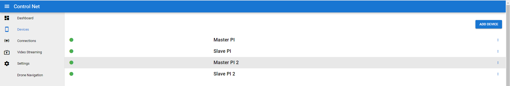
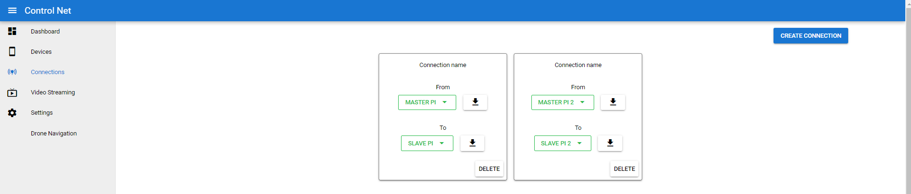

Client Configuration
To be known words
Device
A unique ior-client process, that runs on the client device. These devices are seperated by unique device code in the given user context.
Connection
A connection is connectivity bridge between 2 clients, managed by the IOR-SocketServer. Before the target devices connect to server, a connection has be specified on the server side to get it to work.
Connection Config
After cloning this repository, the directory structure is a follows
./ior-python
/config
/from.json
/from2.json
/to.json
/to2.json
/iorConfigs.config
These are the client connection config that are required by every client that connects to the IOR-SocketServer, and are very important. These files contains server and client related configs. These files can also be downloaded through Controlnet Frontend from connections section.
But by default, these configuration files can be used to Quick Start the client application. Other than that iotConfig.config file is not the connection configuration, but has some external configuration that can be used by IOR Client.
Lets go
In this section we will create a and understand, how the connectivity and connection works in a device.
When a socket server instance is created, it also creates a default user at the server side along with some devices and connections listed below:
- Device 1 - Master 1 (type = Raspberry Pi)
- Device 2 - Slave 1 (type = Raspberry Pi)
- Device 3 - Master 2 (type = Raspberry Pi)
- Device 4 - Slave 2 (type = Raspberry Pi)
Master 1,2 and Slave 1,2 are just device name given, it doesn't mean that the only master can control the slave. The communication is bidirectional.

After creating a device, the devices will not pair up to each other automatically, we will need to specify a connection between those. See below image. There are 2 connections already created
- Connection 1: Master 1 <--> Slave 1
- Connection 2: Master 2 <--> Slave 2

After creating a connection, users can download the configuration file for each connecting device from the download button. These are required and important file, as they store client configurations.
In the above section, we specified json files, these are the same connection file which store client configuration.
- from.json = Master 1
- to.json = Slave 1
- from.json = Master 2
- to.json = Slave 2
These json files also help socket-server to authenticate.
Events and Watchers
Events and Watchers are thread based operations, watchers invoke certain events those are configure in IOR Client, to check the big picture check here a predefined event amd watcher is already present in ior client which watches the latest message read time to check for any error in realtime application. But it's not enabled by default below properties needs to be configured in order to use it.
NOTE: This properties are required before using the MessageWatcher
The below keys should be prefixed with rcn.ior.client. in order to work with events api.
| Key | Default Value | Description |
|---|---|---|
| events.delay.exceeded.name | trigger.iorClient.delay.exceeded | The name of the event to call if the difference between last message and current exceeded to use it the event should be already registered using EventHandler class |
| expected.delay | 0.5 sec | The time difference in seconds to accept for certain amount of delay in messages |
Code Snippet
@Bean()
def getEventHandler() -> EventHandler:
eventHandler = EventHandler()
eventHandler.start()
eventHandler.registerEvent(Event(getContextEnvironment("events.delay.exceeded.name"),
lambda triggerData,_: print(triggerData)))
return eventHandler
After creating a EventHandler object we just need to register an event to the application context, whenever the watcher detects a more time difference than specified it will trigger the event.
Whats Next
There is more content to add.